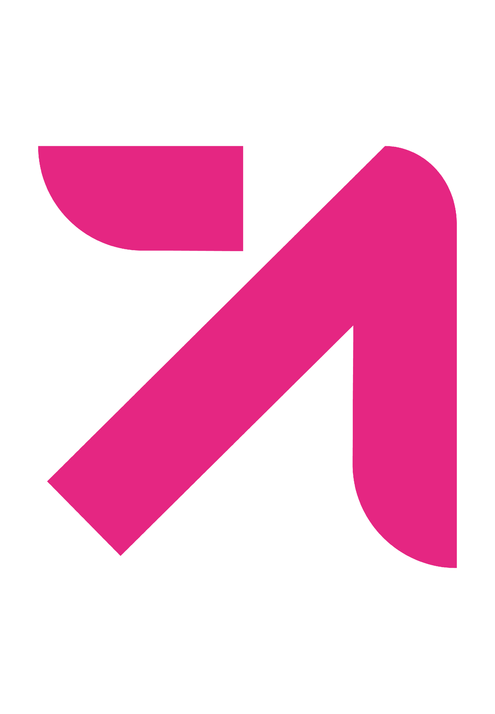
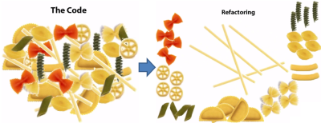
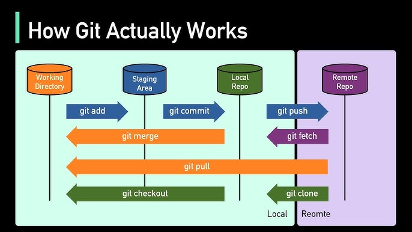

1. Refactorización de Código en Java
La refactorización mejora la estructura interna del código sin alterar su comportamiento externo. Facilita la legibilidad, el mantenimiento y la eficiencia del software.
Consiste en reorganizar el código para hacerlo más claro y fácil de modificar. No añade nuevas funcionalidades, sino que optimiza las existentes para minimizar la complejidad y evitar errores a largo plazo.
Beneficios de la Refactorización

- Mejora la legibilidad: facilita la comprensión del código por parte de todo el equipo.
- Optimización del rendimiento: eliminación de redundancias y estructuras ineficientes.
- Facilita el mantenimiento: el código más claro es más fácil de actualizar y escalar.
1.3 Técnicas Comunes de Refactorización
- Renombrado de variables y métodos: hace el código más comprensible.
- Extracción de métodos: divide lógica compleja en funciones más pequeñas.
- Eliminación de código duplicado: reduce errores y mejora la consistencia.
- Reemplazo de condicionales complejos: simplifica la lógica usando polimorfismo o patrones.
- Uso de clases y objetos: modulariza y organiza la estructura del código.
Ejemplo sin simplificar:
def realizar_pedido():
# Verifica el stock disponible
if not verificar_stock():
raise Exception("Stock insuficiente")
# Calcula el total del pedido
total = calcular_total()
if total > 100:
total_desc = total * 0.9 # Aplica un descuento del 10% para pedidos mayores a 100
else:
total_desc = total # No se aplica descuento
# Procesa el pago con el total después de descuentos
procesar_pago(total_desc)
Ejemplo simplificado:
# Antes de refactorizar, el código puede ser difícil de entender y mantener.
def realizar_pedido():
verificar_stock() # Verifica el stock disponible
total = calcular_total() # Calcula el total del pedido
total_desc = aplicar_descuentos(total) # Aplica descuentos al total
procesar_pago(total_desc) # Procesa el pago con el total después de descuentos
1.4 Herramientas de Refactorización
- IDEs con soporte integrado: Eclipse, IntelliJ, Visual Studio.
- SonarQube: identifica duplicación, complejidad y malas prácticas.
- JUnit y JRebel: pruebas unitarias y recarga rápida de código.
2. Patrones de Refactorización
Conjunto de principios que ayudan a mejorar la estructura del código eliminando duplicación, reduciendo complejidad y facilitando el mantenimiento.

2.1 DRY (Don’t Repeat Yourself)
Evita la duplicación de lógica o datos en el código centralizando la funcionalidad común.
- Reduce errores al modificar un único punto.
- Mejora la mantenibilidad.
def calcular_descuento(precio, descuento):
return precio - (precio * descuento / 100)
2.2 KISS (Keep It Simple, Stupid)
Promueve escribir código simple, claro y directo. Evita condiciones innecesariamente complejas.
def calcular_desc(precio, descuento):
if descuento < 0 or descuento > 100:
return precio
return precio - precio * descuento / 100
2.3 YAGNI (You Aren’t Gonna Need It)
No implementes características que aún no son necesarias. Reduce complejidad y evita código muerto.

2.4 Eliminación de Código Duplicado
Centraliza lógica repetida para evitar inconsistencias y reducir errores.
def realizar_proceso():
verificar_stock()
total = calcular_total()
procesar_pago(total)
2.5 Resumen de Patrones de Refactorización
- DRY: elimina duplicación.
- KISS: simplicidad ante todo.
- YAGNI: evita sobreimplementación.
- Eliminación de duplicado: centraliza código común.
3. Análisis de Código Estático
Revisa el código sin ejecutarlo para detectar errores, vulnerabilidades y mala calidad estructural. Herramientas populares: SonarQube y ESLint.
3.1 SonarQube
- Detecta duplicación y complejidad.
- Analiza calidad y seguridad del código.
- Compatible con múltiples lenguajes.
3.1 ESLint
- Detecta errores de sintaxis en JavaScript.
- Aplica reglas de estilo configurables.
- Detecta variables no usadas y malas prácticas.
4. Control de Versiones: Git en el IDE
Git permite gestionar cambios, trabajar con ramas y colaborar en equipo. Integrarlo en el IDE facilita su uso mediante interfaces visuales.

4.1 Flujo Básico con Git
- Inicializar repositorio.
- Clonar repositorio remoto.
- Realizar cambios y hacer commits.
- Enviar cambios (push) y traer actualizaciones (pull).
- Gestionar ramas y resolver conflictos.
4.1.1 Inicializar Repositorio
git init
4.1.2 Clonar Repositorio Remoto
git clone <url>
4.1.3 Realizar Cambios y Hacer Commits
git add <archivo>
git commit -m "Mensaje del commit"
4.1.4 Enviar Cambios (Push) y Traer Actualizaciones (Pull)
git push origin <rama>
git pull origin <rama>
4.1.5 Gestionar Ramas y Resolver Conflictos
git branch <nombre-rama>
git checkout <nombre-rama>
git merge <rama-a-unir>
5. Generación Automática de Documentación
Javadoc y Sphinx permiten generar documentación clara y navegable a partir del propio código fuente, manteniendo la coherencia entre implementación y documentación.
5.1 Javadoc
Documenta proyectos Java usando comentarios estructurados.
/**
* Calcula el área.
* @param r radio
* @return área
*/
public double calcularArea(double r) {
return Math.PI * r * r;
}
5.2 Sphinx
Genera documentación en HTML, PDF o LaTeX a partir de docstrings y archivos reStructuredText.
def calcular_area(r):
"""Calcula el área de un círculo.
Args:
r (float): radio del círculo
Returns:
float: área del círculo
"""
return math.pi * r * r